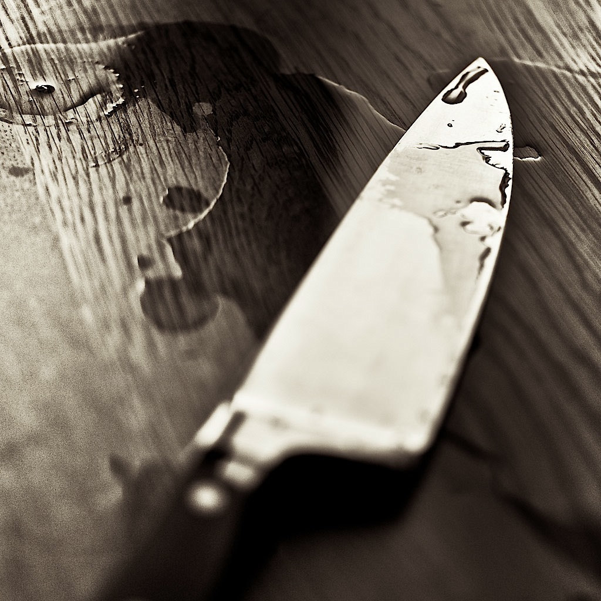

The spoon, made in a variety of materials including metal and wood, is a small ovoid or round shallow bowl at the end of a handle, habitually used for measuring and delivering food to the tongue.
The fork may spear foods to hold them for a cutlery to cut or to elevate them to the lips. It consists of a long handle that culminates in a head that branches into several narrow and slightly curved tines.

Cutlery can have the more precise definition of knives and other cutting implements in the U.S., although it is more commonly referred to as silverware or flatware.
The main items of cutlery include a variety of spoons, forks, and knives. Metals like stainless steel or silver, wood, or plastic are used to make cutlery. Cutlery has evolved into wonderful new combinations in modern times, such as the spife (spoon + knife), spork (spoon + fork), and knork (knife + fork).
I have no reason to hate those beneath me. All I feel for them is pity.